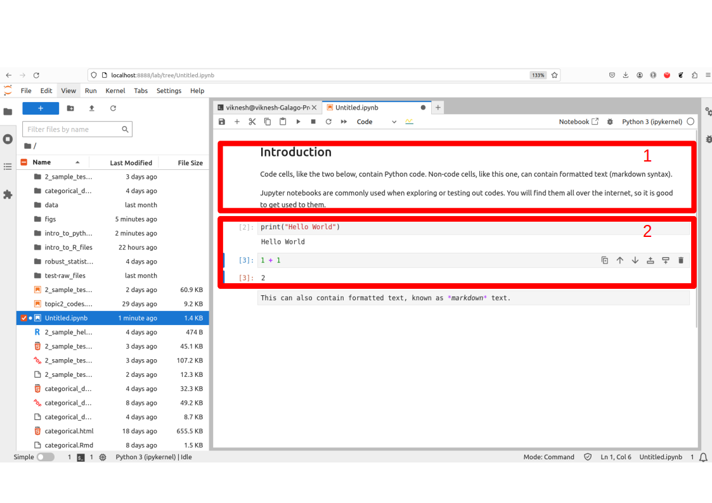
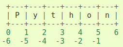

The Zen of Python, by Tim Peters
Beautiful is better than ugly.
Explicit is better than implicit.
Simple is better than complex.
Complex is better than complicated.
Flat is better than nested.
Sparse is better than dense.
Readability counts.
Special cases aren't special enough to break the rules.
Although practicality beats purity.
Errors should never pass silently.
Unless explicitly silenced.
In the face of ambiguity, refuse the temptation to guess.
There should be one-- and preferably only one --obvious way to do it.
Although that way may not be obvious at first unless you're Dutch.
Now is better than never.
Although never is often better than *right* now.
If the implementation is hard to explain, it's a bad idea.
If the implementation is easy to explain, it may be a good idea.
Namespaces are one honking great idea -- let's do more of those!2 Introduction to Python
2.1 Introduction
Python is a general-purpose programming language. It is a higher-level language than C, C++ and Java in the sense that a Python program does not have to be compiled before execution.
It was originally conceived back in the 1980s by Guido van Rossum at Centrum Wiskunde & Informatica (CWI) in the Netherlands. The language is named after a BBC TV show (Guido’s favorite program) “Monty Python’s Flying Circus”.
Python reached version 1.0 in January 1994. Python 2.0 was released on October 16, 2000. Python 3.0, which is backwards-incompatible with earlier versions, was released on 3 December 2008.
Python is a very flexible language; it is simple to learn yet is fast enough to be used in production. Over the past ten years, more and more comprehensive data science toolkits (e.g. scikit-learn, NTLK, tensorflow, keras) have been written in Python and are now the standard frameworks for those models.
Just like R, Python is an open-source software. It is free to use and extend.
2.2 Installing Python and Jupyter Lab
The easiest approach obtain the Python-related software that we need for this course is to download and install Anaconda from this link.
Important
For our class, please ensure that you are using at least Python 3.12.
Anaconda installs several software, including Python itself, and Jupyter Lab. Jupyter Lab is an interactive platform for running Python code. Once you have launched Jupyter Lab through Anaconda, you should be able to access it through your browser at http://localhost:8888/lab.

Jupyter notebooks consist of cells, which can be of three main types:
- code cells,
- output cells, and
- markdown cells.
In Figure 2.1, the red box labelled 1 is a markdown cell. It can be used to contain descriptions or summary of the code. The cells in the box labelled 2 are code cells. To run the codes from our notes, you can copy and paste the codes into a new cell, and then execute them with Ctrl-Enter.
Try out this Easter egg that comes with any Python installation:
More information on using Jupyter notebooks can be obtained from this link.
Jupyter notebooks are great for interactive work with Python, but more advanced users may prefer a full-fledged IDE. If you are an advanced user, and are comfortable with an IDE of your own choice (e.g. Spyder or VSCode), feel free to continue using that to run the codes for this course.
2.3 Basic Data Structures in Python
The main objects in native1 Python that contain data are
- Lists, which are defined with [ ]. Lists are mutable.
- Tuples, which are defined with ( ). Tuples are immutable.
- Dictionaries, which are defined with { }. Dictionaries have keys and items. They are also mutable.
Very soon, we shall see that for statistics, the more common objects we shall deal with are dataframes (from pandas) and arrays (from numpy). However, the latter two require add-on packages; the three object classes listed above are baked into Python.
By the way, this is what mean by (im)mutable:
x = [1, 3, 5, 7, 8, 9, 10]
# The following is OK, because "x" is a list, and hence mutable
x[3] = 17
print(x) [1, 3, 5, 17, 8, 9, 10]
Note
Note that we do not need the c( ) function, like we did in R. This is a common mistake I make when switching between the two languages.
Here is how we create lists, tuples and dictionaries.
2.4 Slice Operator in Python
One important point to take note is that, contrary to R, Python begins indexing of objects starting with 0. Second, the slice operator in Python is a little more powerful than in R. It can be used to extract regular sequences from a list, tuple or string easily.
In general, the syntax is <list-like object>[a:b], where a and b are integers. Such a call would return the elements at indices a, a+1 until b-1. Take note that the end point index is not included.
'P''n'6['P', 't', 'o']This indexing syntax is used in the additional packages we use as well, so it is good to know about it.Here is a pictorial representation of how positive and negative indexes work together.

2.5 Numpy Arrays
Just like R, Python has several contributed packages that are essential for statistics and data analysis. These include numpy and pandas. Please install these two packages (through Anaconda) before proceeding with the rest of this topic.
import numpy as np
array1 = np.array([1, 2, 3, 4, 5])
array2 = np.array([6, 7, 8, 9, 10])
matrix1 = np.array([array1, array2])
print(matrix1)[[ 1 2 3 4 5]
[ 6 7 8 9 10]]The slice operator can then be used in each dimension of the matrix to subset it.
array([1, 4])array([7, 8])The numpy arrays are objects in Python, with several methods associated with them. For instance, here are a couple and how we can use them:
(2, 5)array([[ 1, 6],
[ 2, 7],
[ 3, 8],
[ 4, 9],
[ 5, 10]])Here is a table with some common operations that you can apply on a numpy array. The objects referred to in the second column are from the earlier lines of code.
| Method | Description |
|---|---|
shape |
Returns dimensions, e.g. matrix1.shape |
T |
Transposes the array, e.g. matrix1.T |
mean |
Computes col- or row-wise means, e.g. matrix1.mean(axis=0) or matrix1.mean(axis=1) |
sum |
Computes col- or row-wise means, e.g. matrix1.sum(axis=0) or matrix1.sum(axis=1) |
argmax |
Return the index corresponding to the max within the specified dimension, e.g. matrix1.argmax(axis=0) for the max within the row. |
reshape |
To change the dimensions, e.g. array1.reshape((5,1)) converts the array into a 5x1 matrix |
To combine arrays, we use the functions vstack and hstack. These are analogous to rbind and cbind in R.
2.6 Pandas DataFrames
The next important add-on package that we shall work with is pandas. It provides a DataFrame class of objects for working with tabular data, just like data.frame within R. However, there are some syntactic differences with R that we shall get to soon. The following command creates a simple pandas
import pandas as pd
data = {'X': [1,2,3,4,5,6], 'Y': [6,5,4,3,2,1]}
df = pd.DataFrame(data, columns =['X', 'Y'])
print(df) X Y
0 1 6
1 2 5
2 3 4
3 4 3
4 5 2
5 6 1We will get into the syntax for accessing subsets of the dataframe soon, but for now, here is how we can extract a single column from the dataframe. The resulting object is a pandas Series, which is a lot like a 1-D array, and can be indexed like one as well.
Note
The built-in objects in Python are lists, tuples and dictionaries. Lists and tuples can contain elements of different types, e.g. strings and integers in a single object. However, they have no dimensions, so to speak of. Numpy arrays can be high-dimensional structures. In addition, the elements have to be homogeneous. For instance, in a 2x2x2 numeric numpy array, every one of the 8 elements has to be a float point number. Pandas DataFrames are tabular objects, where, within a column, each element has to be of the same type.
2.7 Reading Data into Python
Let us begin with the same file that we began with in the topic on R: crab.txt. In that topic, we observed that this file contained headings, and that the columns were separated by spaces. The pandas function to read in such text files is read_table(). It has numerous optional arguments, but in this case we just need these two:
<string>:1: FutureWarning: The 'delim_whitespace' keyword in pd.read_table is deprecated and will be removed in a future version. Use ``sep='\s+'`` instead color spine width satell weight
0 3 3 28.3 8 3.05
1 4 3 22.5 0 1.55
2 2 1 26.0 9 2.30
3 4 3 24.8 0 2.10
4 4 3 26.0 4 2.60Do take note of the differences with R - the input to the header argument corresponds to the line number containing the column names. Secondly, the head() function is a method belonging to the DataFrame object.
When the file does not contain column names, we can supply them (as a list or numpy array) when we read the data in. Here is an example:
varnames = ["Subject", "Gender", "CA1", "CA2", "HW"]
data2 = pd.read_table('data/ex_1.txt', header=None,
names=varnames, delim_whitespace=True)<string>:1: FutureWarning: The 'delim_whitespace' keyword in pd.read_table is deprecated and will be removed in a future version. Use ``sep='\s+'`` instead Subject Gender CA1 CA2 HW
0 10 M 80 84 A
1 7 M 85 89 A
2 4 F 90 86 B
3 20 M 82 85 B
4 25 F 94 94 A
5 14 F 88 84 C2.8 Subsetting DataFrames with Pandas
DataFrames in pandas are indexed for efficient searching and retrieval. When subsetting them, we have to add either .loc or .iloc and use it with square brackets.
The .loc notation is used when we wish to index rows and columns according to their names. The general syntax is <DataFrame>.loc[ , ]. A slice operator can be used for each row subset and column subset to be retrieved.
color spine width
0 3 3 28.3
1 4 3 22.5
2 2 1 26.0 color spine width satell weight
0 3 3 28.3 8 3.05
2 2 1 26.0 9 2.30
4 4 3 26.0 4 2.60The .iloc notation is used when we wish to index rows and columns using integer values. The general syntax is similar; try this and observe the difference with .loc.
If you notice, the .iloc notation respects the rules of the in-built slice operator, in the sense that the end point is not included in the output. On the other hand, the .loc notation includes the end point.
In data analysis, a common requirement is to subset a dataframe according to values in columns. Just like in R, this is achieved with logical values.
2.9 Loops in Python
It is extremely efficient to execute “for” loops in Python. Many objects in Python are iterators, which means they can be iterated over. Lists, tuples and dictionaries can all be iterated over very easily.
Before getting down to examples, take note that Python does not use curly braces to denote code blocks. Instead, these are defined by the number of indentations in a line.
The current element is 1.
The current element is 3.
The current element is 5.
The current element is 17.
The current element is 8.
The current element is 9.
The current element is 10.Notice how we do not need to set up any running index; the object is just iterated over directly. The argument to the print() function is an f-string. It is the recommended way to create string literals that can vary according to arguments.
Here is another example of iteration, this time using dictionaries which have key-value pairs. In this case, we iterate over the keys.
dict1 = {'holmes': 'male', 'watson': 'male', 'mycroft': 'male',
'hudson': 'female', 'moriarty': 'male', 'adler': 'female'}
# dict1['hudson']
for x in dict1.keys():
print(f"The gender of {x} is {dict1[x]}")The gender of holmes is male
The gender of watson is male
The gender of mycroft is male
The gender of hudson is female
The gender of moriarty is male
The gender of adler is femaleIn the topic on R, we wrote a block of code that incremented an integer until the square was greater than 36. Here is the Python version of that code:
1, True
4, True
9, True
16, True
25, True
36, FalseIt is also straightforward to write a for-loop to perform the above, since we know when the break-point of the loop will be. The np.arange() function generates evenly spaced integers.
2.10 User Defined Functions
The syntax for creating a new function in Python is as follows:
Here is the same function as earlier, computing the circumference of a circle with a given radius.
2.11 Miscellaneous
Package installation
So far, we have used numpy and pandas, but we shall need to call upon a few other add-on packages we proceed in the course. These include statsmodels, scipy and matplotlib. It is convenient to use Anaconda to help install these packages.
Getting help
Most functions in Python are well-documented. In order to access this documentation from within a Jupyter notebook, use the ? operator. For more details, including the source code, use the ?? operator. For instance, for more details of the pd.read_csv() function, you can execute this command:
The internet is full of examples and how-to’s for Python; help is typically just a Google search or a chatGPT query away. However, it is always better to learn from the ground up instead of through snippets for specific tasks. Please look through the websites in the Section 2.13.1 below.
2.12 Major Differences with R
Before we leave this topic, take note of some very obvious differences with R:
- The assignment operator in R is
<-; for Python it is=. - When creating vectors in R, you will need
c( ), but in Python, this is not the case. - R implements it’s object oriented mechanism in a different manner from Python. For instance, when plotting with R, you would call
plot(<object>)but in Python, you would call<object>.plot(). In Python, the methods belong to the class, but not in R.
2.13 References
Website References
- Beginner’s guide to Numpy: This is from the official numpy documentation website.
- 10 minutes to Pandas: This is a quickstart to pandas, from the official website. You can find more tutorials on this page too.
- Python official documentation: This is from the
official Python page. It contains a tutorial, an overview of all built-in packages, and several howto’s, including on regular expression. A very good website to learn from. - Anaconda installation
- Jupyter Lab help
i.e., Python without any packages imported.↩︎